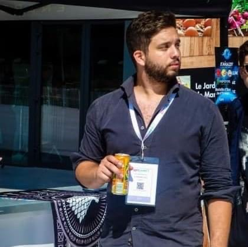

Mon CV
⦁ janvier 2021 –juillet 2022 Nikki sushi : manageur, serveur.
⦁ aout 2020 –décembre 2020 Emballage concept : cariste et préparateur de commande.
⦁ octobre 2019 – janvier 2020 Boulangerie Moulin de Mignet : accueil client, service et rangement.
⦁septembre 2017 –septembre 2018 Bricomarché 13 : accueil client, conseils, mise en rayon, préparation livraison, inventaire et réception colis.
⦁ juin 2017 – aout 2017 Restaurant la Boucherie 13 : accueil client, serveur, barman, commis et entretien.
⦁ aout 2016 – avril 2017 Bowling du bras d’or 13 : accueil client, service, barman, entretien et mécanicien.
Création d'un site internet mit en ligne:
http://www.vente-maison-153m2-5-chambres-var-83-brignoles.fr
